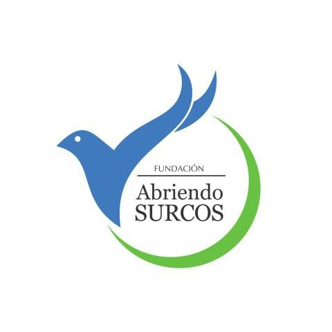
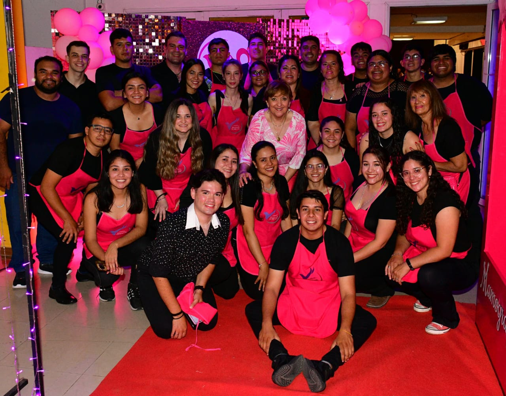
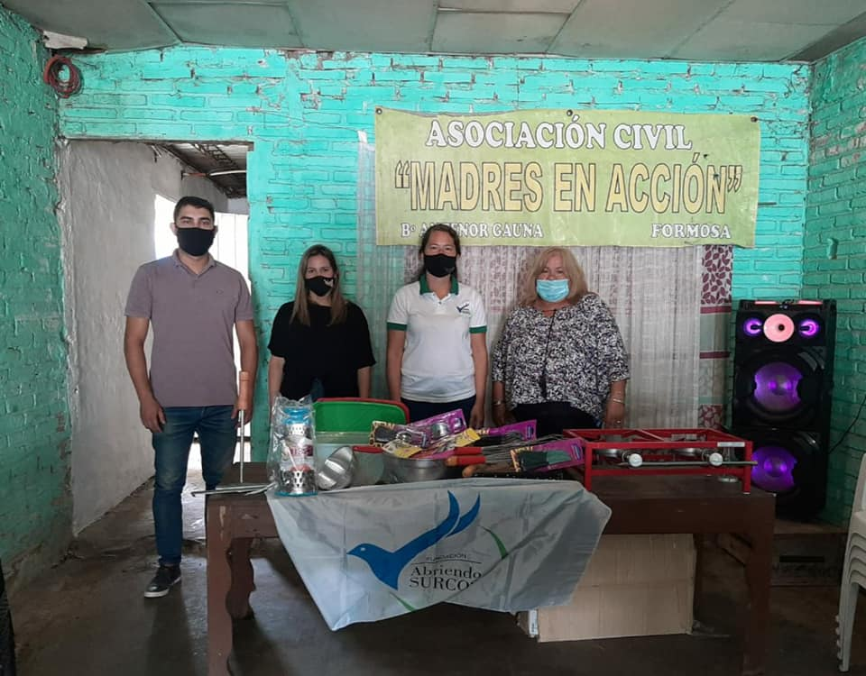
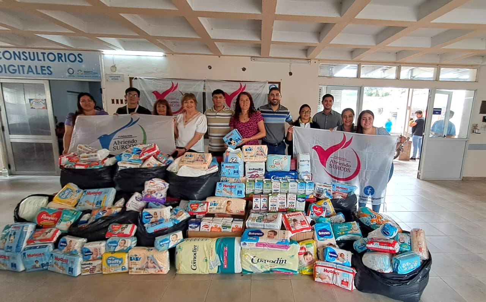
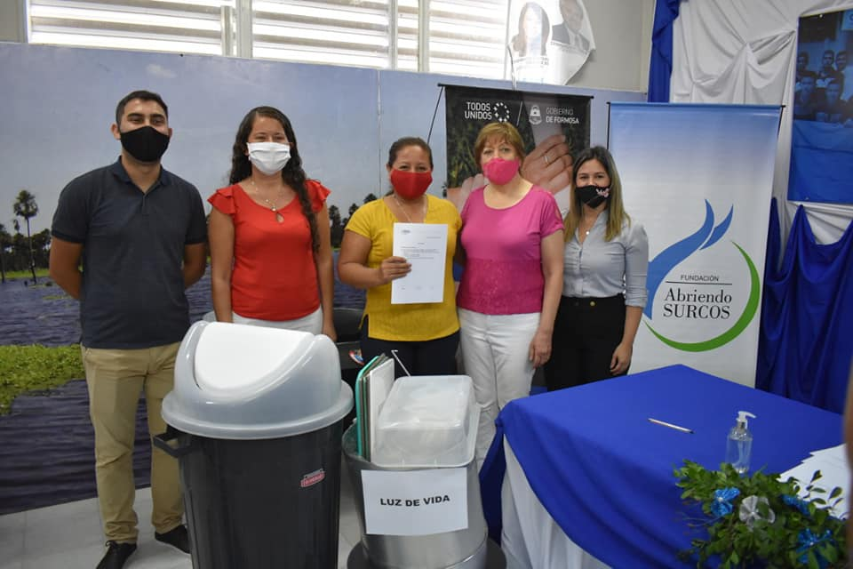
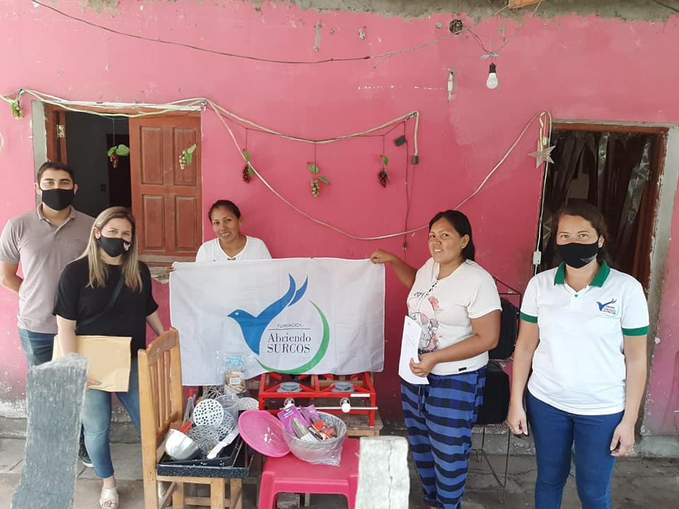
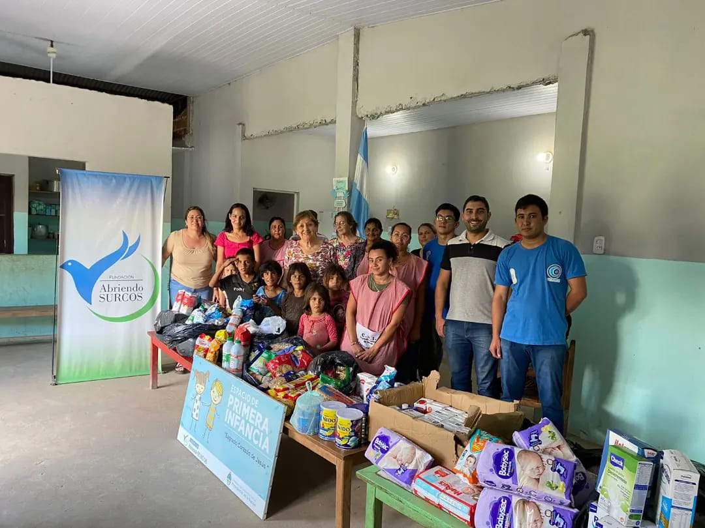
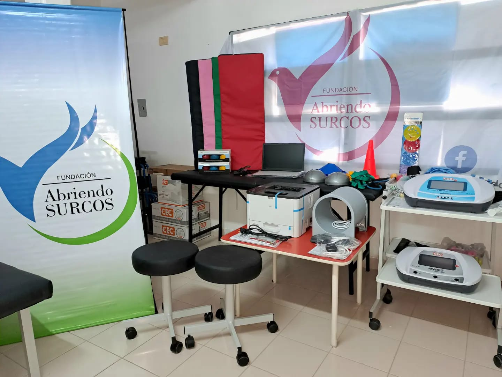

    <!DOCTYPE html>
<html lang="en">
<head>
    <meta charset="UTF-8">
    <meta name="viewport" content="width=device-width, initial-scale=1.0">
    <title>Fundacion Abriendo Surcos</title>
    <link rel="stylesheet" href="styles.css">
    <link href="https://cdn.jsdelivr.net/npm/bootstrap@5.3.3/dist/css/bootstrap.min.css" rel="stylesheet" integrity="sha384-QWTKZyjpPEjISv5WaRU9OFeRpok6YctnYmDr5pNlyT2bRjXh0JMhjY6hW+ALEwIH" crossorigin="anonymous">
</head>
<body>
</html>

    <ul>
        <li>
            <a href="contacto.html">Contacto</a>
        </li>
      
       
        <li>
            <a href="index.html">Fundación Abriendo Surcos</a>
        </li>
    </div>
    </ul>
    
    <div class="container-fluid">
        <div class="row">
            <div class="col-lg-6 bg-primary d-flex justify-content-center">Fundación Abriendo Surcos</div>
        </div>
    
    <p>En el año 2013 nació y se formalizó la Fundación Abriendo Surcos, 
        integrada por ciudadanos Fomoseños, interesados en asistir y 
        mejorar la calidad de vida y crecimiento de nuestros niños y adultos.</p>
        <hr>
        
        <h2>Actividades Recreativas</h2>
        
       <h2> Octubre Rosa</h2>
       
       <h2>Programas</h2>
       
       <h2>Donaciones</h2>
       <hr>

       <div>
        <section> 
                <h2>Actividades Recreativas</h2>
                <p> Nuestro objetivo es generar un espacio de encuentro y contención donde los más chicos 
                 puedan expresarse y encontrar un lugar de pertenencia. A través de actividades lúdicas 
                 y recreativas orientadas a la Educación Emocional.</p>
                
                 <hr>
       
    </div>
</section>
<section>
    <div>
       <h2>Octubre Rosa</h2>
       <p>”Concientización para la Prevención del Cáncer de Mama”
        Creemos firmemente en que la clave para reducir la incidencia de esta enfermedad radica 
        en la promoción y la detección temprana.</p>
        
        <hr>
    </div>
</section>
<section>
    <div>
        <div>
        <h2>Programas</h2>
        <p>La Fundación cuenta con objetivos, entre los principales se destacan: La Protección, 
        promoción y desarrollo de niños carenciados, incluyendo aspectos relativos a su salud, 
        educación, contención e inserción social.</p>
    </div>
        <div>
            <div>
        
         <hr>
    </div>
    </div>
</section>
<section>
    <div>
        <section>
            <div>
        <h2>Donaciones</h2>
        <p>La colaboración de la comunidad en los eventos relacionados con la Campaña de Concientización 
            del Cáncer de Mama, nos permite contribuir con lo recaudado a diferentes Intituciones de 
            nuestra Ciudad.</p>
        </div>
        <div>
            
             <hr>
        </div>
    </div>
        </section>
        

            <h3>NOS GANAMOS LA VIDA CON LO QUE RECIBIMOS, PERO HACEMOS LA VIDA CON LO QUE DAMOS..</h3>
</body>
</html>